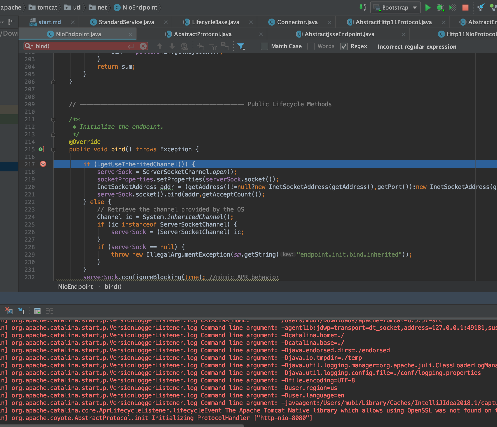
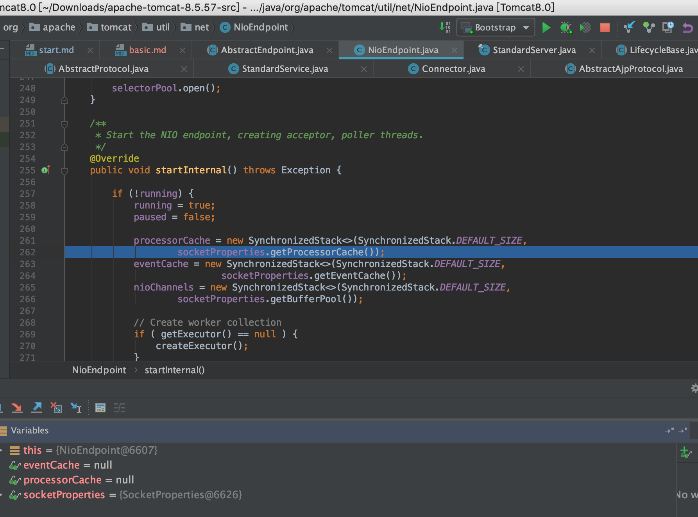
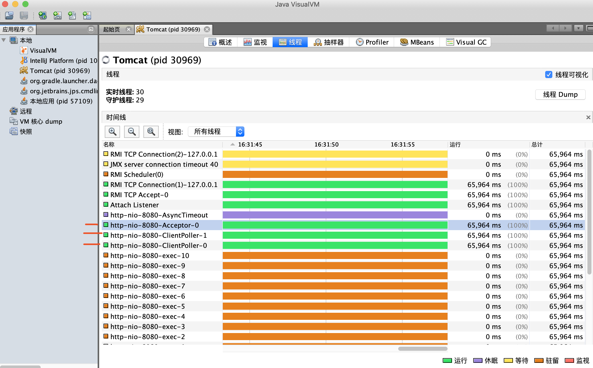
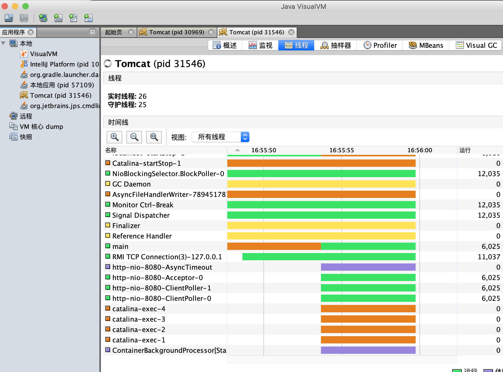

TreeviewCopyright @doctording all right reserved, powered by aleen42
Tomcat启动流程&架构
源码启动流程分析
Bootstrap main
Catlina load
// Start the new server
try {
getServer().init();
} catch (LifecycleException e) {
if (Boolean.getBoolean("org.apache.catalina.startup.EXIT_ON_INIT_FAILURE")) {
throw new java.lang.Error(e);
} else {
log.error("Catalina.start", e);
}
}
@Override
public final synchronized void init() throws LifecycleException {
if (!state.equals(LifecycleState.NEW)) {
invalidTransition(Lifecycle.BEFORE_INIT_EVENT);
}
try {
setStateInternal(LifecycleState.INITIALIZING, null, false);
initInternal();
setStateInternal(LifecycleState.INITIALIZED, null, false);
} catch (Throwable t) {
handleSubClassException(t, "lifecycleBase.initFail", toString());
}
}
StandardServer initInternal
service.init();
StandardService initInternal
engine.init();
StandardEngine initInternal
getRealm
connector.init();
Connector initInternal
protocolHandler.init();
AbstractHttp11Protocol init // tomcat 8默认了NIO方式，控制台可以看到"http-nio-8080"
AbstractProtocol init
AbstractEndpoint init
bind();
NioEndpoint bind // ServerSocketChannel
// 默认设置：serverSock.configureBlocking(true);
Catlina start
StandardServer startInternal
engine.start();
executor.start();
connector.start();
Connector startInternal
AbstractProtocol start
endpoint.start();
NioEndpoint startInternal
Poller run
selector.select // Selector处理事件
processKey(sk, attachment); // 处理SelectionKey
processSocket(attachment, SocketEvent.OPEN_READ, true) // 处理请求
executor.execute(sc);
processSocket(attachment, SocketEvent.OPEN_WRITE, true) // 响应返回
startAcceptorThreads // 默认一个acceptor线程
NioEndpoint的内部类Acceptor run方法
serverSock.accept();
setSocketOptions(socket); // 处理请求，且会重新`socket.configureBlocking(false)`
- 下图所示debug到
NioEndpoint的bind方法

- 下图所示debug到
NioEndpoint的创建 acceptor, poller threads

相关源码见：NioEndpoint类的startInternal方法
/**
* Start the NIO endpoint, creating acceptor, poller threads.
*/
@Override
public void startInternal() throws Exception {
if (!running) {
running = true;
paused = false;
processorCache = new SynchronizedStack<>(SynchronizedStack.DEFAULT_SIZE,
socketProperties.getProcessorCache());
eventCache = new SynchronizedStack<>(SynchronizedStack.DEFAULT_SIZE,
socketProperties.getEventCache());
nioChannels = new SynchronizedStack<>(SynchronizedStack.DEFAULT_SIZE,
socketProperties.getBufferPool());
// Create worker collection
if ( getExecutor() == null ) {
createExecutor();
}
initializeConnectionLatch();
// Start poller threads
pollers = new Poller[getPollerThreadCount()];
for (int i=0; i<pollers.length; i++) {
pollers[i] = new Poller();
Thread pollerThread = new Thread(pollers[i], getName() + "-ClientPoller-"+i);
pollerThread.setPriority(threadPriority);
pollerThread.setDaemon(true);
pollerThread.start();
}
startAcceptorThreads();
}
}
jvisualvm查看tomcat启动后的线程
- 默认1个Acceptor线程
- 默认2个Poller线程

同时看到了10个http-nio-8080-exex-线程,这是由于EndPoint默认设置的了private int minSpareThreads = 10;
Acceptor线程
- 自定义类
LimitLatch实现了AQS,请求连接过来会先会判断最大连接数
//if we have reached max connections, wait
countUpOrAwaitConnection();
- NIOEndpoint中accept一个
SocketChannel后会复用或构造一个NioChannel交给poller线程处理
protected class Acceptor extends AbstractEndpoint.Acceptor {
@Override
public void run() {
int errorDelay = 0;
// Loop until we receive a shutdown command
while (running) {
// Loop if endpoint is paused
while (paused && running) {
state = AcceptorState.PAUSED;
try {
Thread.sleep(50);
} catch (InterruptedException e) {
// Ignore
}
}
if (!running) {
break;
}
state = AcceptorState.RUNNING;
try {
//if we have reached max connections, wait
countUpOrAwaitConnection();
SocketChannel socket = null;
try {
// Accept the next incoming connection from the server
// socket
socket = serverSock.accept();
} catch (IOException ioe) {
// We didn't get a socket
countDownConnection();
if (running) {
// Introduce delay if necessary
errorDelay = handleExceptionWithDelay(errorDelay);
// re-throw
throw ioe;
} else {
break;
}
}
// Successful accept, reset the error delay
errorDelay = 0;
// Configure the socket
if (running && !paused) {
// setSocketOptions() will hand the socket off to
// an appropriate processor if successful
if (!setSocketOptions(socket)) {
closeSocket(socket);
}
} else {
closeSocket(socket);
}
} catch (Throwable t) {
ExceptionUtils.handleThrowable(t);
log.error(sm.getString("endpoint.accept.fail"), t);
}
}
state = AcceptorState.ENDED;
}
Poller线程
Poller线程主要用于以较少的资源轮询已连接套接字以保持连接，当数据可用时转给工作线程
- 如下注册
NioChannel到Poller事件同步队列中SynchronizedQueue<PollerEvent> events
/**
* Registers a newly created socket with the poller.
*
* @param socket The newly created socket
*/
public void register(final NioChannel socket) {
socket.setPoller(this);
NioSocketWrapper ka = new NioSocketWrapper(socket, NioEndpoint.this);
socket.setSocketWrapper(ka);
ka.setPoller(this);
ka.setReadTimeout(getSocketProperties().getSoTimeout());
ka.setWriteTimeout(getSocketProperties().getSoTimeout());
ka.setKeepAliveLeft(NioEndpoint.this.getMaxKeepAliveRequests());
ka.setReadTimeout(getConnectionTimeout());
ka.setWriteTimeout(getConnectionTimeout());
PollerEvent r = eventCache.pop();
ka.interestOps(SelectionKey.OP_READ);//this is what OP_REGISTER turns into.
if ( r==null) r = new PollerEvent(socket,ka,OP_REGISTER);
else r.reset(socket,ka,OP_REGISTER);
addEvent(r);
}
- Poller线程的run方法,把客户端Socket以事件的方式交给Tomcat工作线程池
采用Selector得到Set<SelectionKey>,并遍历交给processKey方法去真正处理对应的SelectionKey
/**
* The background thread that adds sockets to the Poller, checks the
* poller for triggered events and hands the associated socket off to an
* appropriate processor as events occur.
*/
@Override
public void run() {
// Loop until destroy() is called
while (true) {
boolean hasEvents = false;
try {
if (!close) {
hasEvents = events();
if (wakeupCounter.getAndSet(-1) > 0) {
//if we are here, means we have other stuff to do
//do a non blocking select
keyCount = selector.selectNow();
} else {
keyCount = selector.select(selectorTimeout);
}
wakeupCounter.set(0);
}
if (close) {
events();
timeout(0, false);
try {
selector.close();
} catch (IOException ioe) {
log.error(sm.getString("endpoint.nio.selectorCloseFail"), ioe);
}
break;
}
} catch (Throwable x) {
ExceptionUtils.handleThrowable(x);
log.error("",x);
continue;
}
//either we timed out or we woke up, process events first
if ( keyCount == 0 ) hasEvents = (hasEvents | events());
Iterator<SelectionKey> iterator =
keyCount > 0 ? selector.selectedKeys().iterator() : null;
// Walk through the collection of ready keys and dispatch
// any active event.
while (iterator != null && iterator.hasNext()) {
SelectionKey sk = iterator.next();
NioSocketWrapper attachment = (NioSocketWrapper)sk.attachment();
// Attachment may be null if another thread has called
// cancelledKey()
if (attachment == null) {
iterator.remove();
} else {
iterator.remove();
processKey(sk, attachment);
}
}//while
//process timeouts
timeout(keyCount,hasEvents);
}//while
getStopLatch().countDown();
}
protected void processKey(SelectionKey sk, NioSocketWrapper attachment) {
try {
if ( close ) {
cancelledKey(sk);
} else if ( sk.isValid() && attachment != null ) {
if (sk.isReadable() || sk.isWritable() ) {
if ( attachment.getSendfileData() != null ) {
processSendfile(sk,attachment, false);
} else {
unreg(sk, attachment, sk.readyOps());
boolean closeSocket = false;
// Read goes before write
if (sk.isReadable()) {
if (!processSocket(attachment, SocketEvent.OPEN_READ, true)) {
closeSocket = true;
}
}
if (!closeSocket && sk.isWritable()) {
if (!processSocket(attachment, SocketEvent.OPEN_WRITE, true)) {
closeSocket = true;
}
}
if (closeSocket) {
cancelledKey(sk);
}
}
}
} else {
//invalid key
cancelledKey(sk);
}
} catch ( CancelledKeyException ckx ) {
cancelledKey(sk);
} catch (Throwable t) {
ExceptionUtils.handleThrowable(t);
log.error("",t);
}
}
- dispatch为true，交给工作线程池去处理读写事件
if (sk.isReadable()) {
if (!processSocket(attachment, SocketEvent.OPEN_READ, true)) {
closeSocket = true;
}
}
if (!closeSocket && sk.isWritable()) {
if (!processSocket(attachment, SocketEvent.OPEN_WRITE, true)) {
closeSocket = true;
}
}
Tomcat工作线程池会处理客户端Socket的读写事件
/**
* Process the given SocketWrapper with the given status. Used to trigger
* processing as if the Poller (for those endpoints that have one)
* selected the socket.
*
* @param socketWrapper The socket wrapper to process
* @param event The socket event to be processed
* @param dispatch Should the processing be performed on a new
* container thread
*
* @return if processing was triggered successfully
*/
public boolean processSocket(SocketWrapperBase<S> socketWrapper,
SocketEvent event, boolean dispatch) {
try {
if (socketWrapper == null) {
return false;
}
SocketProcessorBase<S> sc = processorCache.pop();
if (sc == null) {
sc = createSocketProcessor(socketWrapper, event);
} else {
sc.reset(socketWrapper, event);
}
Executor executor = getExecutor();
if (dispatch && executor != null) {
executor.execute(sc);
} else {
sc.run();
}
} catch (RejectedExecutionException ree) {
getLog().warn(sm.getString("endpoint.executor.fail", socketWrapper) , ree);
return false;
} catch (Throwable t) {
ExceptionUtils.handleThrowable(t);
// This means we got an OOM or similar creating a thread, or that
// the pool and its queue are full
getLog().error(sm.getString("endpoint.process.fail"), t);
return false;
}
return true;
}
NioEndpoint的线程池
- JDk提供自带的
ThreadPoolExecutor - 队列使用了
LinkedBlockingQueue<Runnable>（线程安全的阻塞队列） - 采用默认的
RejectHandler拒绝策略 - 线程工厂使用
TaskThreadFactory
public void createExecutor() {
internalExecutor = true;
TaskQueue taskqueue = new TaskQueue();
TaskThreadFactory tf = new TaskThreadFactory(getName() + "-exec-", daemon, getThreadPriority());
executor = new ThreadPoolExecutor(getMinSpareThreads(), getMaxThreads(), 60, TimeUnit.SECONDS,taskqueue, tf);
taskqueue.setParent( (ThreadPoolExecutor) executor);
}
- 关于线程池构造的线程名字
可以在tomcat配置文件中配置namePrefix，或者是程序默认如下(例如nio的:http-nio-8080)
AbstractProtocol 类的 getName 方法
/**
* The name will be prefix-address-port if address is non-null and
* prefix-port if the address is null.
*
* @return A name for this protocol instance that is appropriately quoted
* for use in an ObjectName.
*/
public String getName() {
return ObjectName.quote(getNameInternal());
}
private String getNameInternal() {
StringBuilder name = new StringBuilder(getNamePrefix());
name.append('-');
if (getAddress() != null) {
name.append(getAddress().getHostAddress());
name.append('-');
}
int port = getPort();
if (port == 0) {
// Auto binding is in use. Check if port is known
name.append("auto-");
name.append(getNameIndex());
port = getLocalPort();
if (port != -1) {
name.append('-');
name.append(port);
}
} else {
name.append(port);
}
return name.toString();
}
自己设置Tomcat的线程池
<Executor name="tomcatThreadPool" namePrefix="catalina-exec-"
maxThreads="150" minSpareThreads="4"/>
-->
<!-- A "Connector" represents an endpoint by which requests are received
and responses are returned. Documentation at :
Java HTTP Connector: /docs/config/http.html
Java AJP Connector: /docs/config/ajp.html
APR (HTTP/AJP) Connector: /docs/apr.html
Define a non-SSL/TLS HTTP/1.1 Connector on port 8080
-->
<Connector port="8080" protocol="HTTP/1.1" executor="tomcatThreadPool"
connectionTimeout="20000"
redirectPort="8443" />

附加：public abstract class LifecycleBase implements Lifecycle
- Lifecycle接口统一管理Tomcat生命周期
public interface Lifecycle {
// 13个状态常量值
public static final String BEFORE_INIT_EVENT = "before_init";
public static final String AFTER_INIT_EVENT = "after_init";
public static final String START_EVENT = "start";
public static final String BEFORE_START_EVENT = "before_start";
public static final String AFTER_START_EVENT = "after_start";
public static final String STOP_EVENT = "stop";
public static final String BEFORE_STOP_EVENT = "before_stop";
public static final String AFTER_STOP_EVENT = "after_stop";
public static final String AFTER_DESTROY_EVENT = "after_destroy";
public static final String BEFORE_DESTROY_EVENT = "before_destroy";
public static final String PERIODIC_EVENT = "periodic";
public static final String CONFIGURE_START_EVENT = "configure_start";
public static final String CONFIGURE_STOP_EVENT = "configure_stop";
// 3个监听器方法
public void addLifecycleListener(LifecycleListener listener);
public LifecycleListener[] findLifecycleListeners();
public void removeLifecycleListener(LifecycleListener listener);
// 4个生命周期方法
public void init() throws LifecycleException;
public void start() throws LifecycleException;
public void stop() throws LifecycleException;
public void destroy() throws LifecycleException;
// 2个当前状态方法
public LifecycleState getState();
public String getStateName();
- LifecycleBase 类则是Lifecycle 接口的默认实现